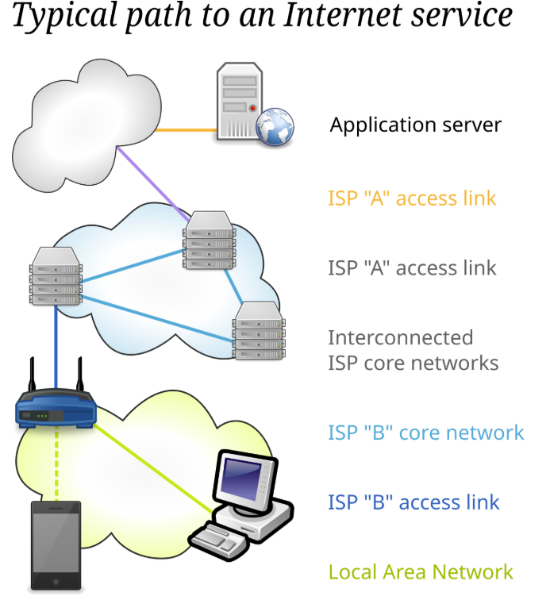
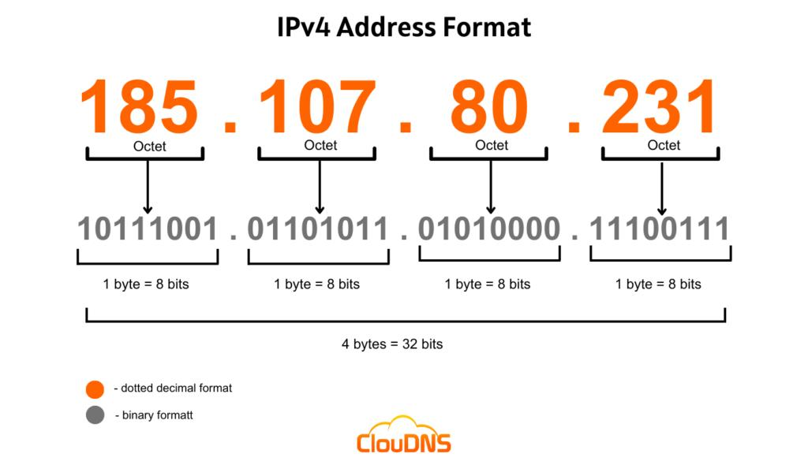
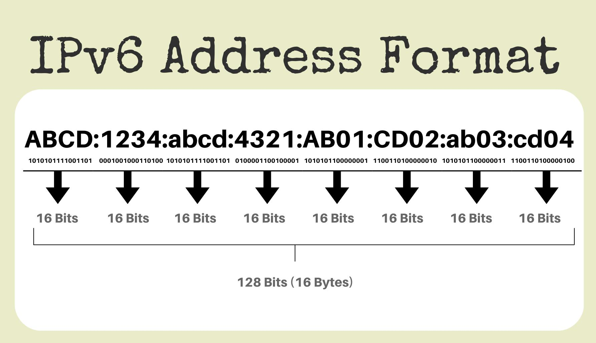
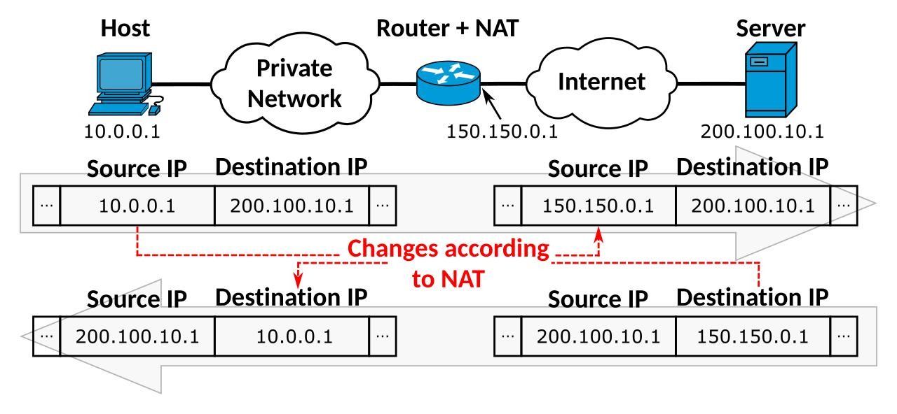
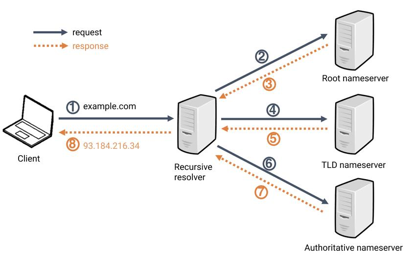
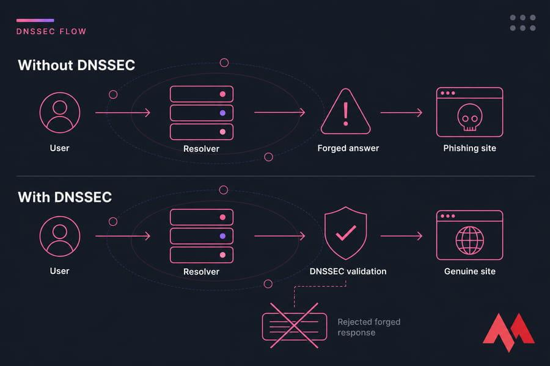

網際網路如何連通設備？
我們平常連上 Wi-Fi 或乙太網路之後，資料究竟是怎麼走到外面的世界？
當你連接到可以存取外部網路的 Wi-Fi 或乙太網路時，通常可以存取區域網路內的設備，也可以透過網路服務供應商（ISP）提供的網路，存取其他可經由網際網路連線到達的設備與服務。
在這個過程中，電纜與光纖是重要的傳輸媒介。可以把光纖想像成網路世界裡的微血管：它把住家、學校、公司等地方連接到電信業者的網路，再接往區域網路節點、城市間的骨幹網路，以及不同網路之間的互連設施。國際資料還可能經由海底光纜跨越海洋，連接不同國家與洲。
如果把整個網路想成循環系統，接入網路就像細小的血管，骨幹網路與國際光纜則像更大型的血管，負責承載大量的資料流量。它們共同構成了全球互相連接的網路。不過，這是幫助理解的簡化比喻；真實的網際網路並不是所有資料都匯入同一個大機房，而是由許多不同的網路、路由器與互連節點共同組成。
核心概念：網際網路並不是一台中央電腦，而是許多互相連接、能夠交換資料的網路所形成的整體。

通訊協定與 IP 位址
要讓不同設備互相溝通，就需要大家遵循共同的規則。
要使不同廠牌、不同作業系統的設備能夠互相溝通，必須採用彼此都遵循的通訊協定。IP 是 Internet Protocol（網際網路協定）的縮寫，IP 位址則是網路通訊中用來標示封包來源與目的地的位址資訊。
可以把 IP 位址想像成郵寄地址：如果資料要從一台設備送到另一台設備，就需要知道封包要送往哪個目的地；封包中也會帶有來源位址資訊，讓網路設備知道資料從哪裡來。IP 位址與實體住家地址並不完全相同，而且一台設備可能有多個 IP 位址；同一個私人網路裡的位址，也可能在另一個私人網路中重複使用。


來源位址
標示這個 IP 封包從哪個 IP 位址送出，供通訊與回應時參考。
目的位址
標示封包要送往哪個 IP 位址，路由器會依照路由資訊轉送封包。
IPv4 與 IPv6：位址為什麼需要擴充？
從 32 位元到 128 位元，位址空間大幅增加。
IPv4：由四組十進位數字組成
IPv4 是廣泛使用的 IP 版本之一。它的位址總長度為 32 位元，通常寫成四組以句點分隔的十進位數字。每一組代表 8 位元，也就是一個位元組，因此每組的數值範圍是 0 到 255。
這個例子展示 IPv4 的格式；其中 169.254.0.0/16 屬於鏈路本地位址範圍，通常不會被路由到一般的公網。因此，看到一個格式正確的 IPv4 位址，不代表它就能在全球網際網路上直接被存取。
因為 IPv4 有 32 位元，理論上共有 232 種不同的位元組合，也就是約 42.9 億個位址。但其中有些範圍保留給特殊用途，還有一些位址不能直接分配給一般終端設備，因此可自由分配的數量比這個理論值更少。
在 IPv4 位址的表示方式中，四組數字各自代表 8 位元；至於網路範圍如何切分，實際上會由網路遮罩與 CIDR 前綴長度等資訊決定，並不是所有位址都固定按照「前面代表國家、後面代表住家」的方式分配。
位址不足的問題
早期網際網路的規模遠小於今日，後來隨著個人電腦、手機、伺服器與各種連網設備普及，IPv4 位址逐漸變得吃緊。位址不足的問題早在 1990 年代就已經受到關注；2011 年，全球負責分配 IPv4 位址的 IANA 可自由分配位址池正式耗盡。這並不表示所有 IPv4 位址在那一年突然不能使用，而是可供新的分配使用的剩餘位址已經用盡。
IPv6：使用十六進位表示 128 位元位址
為了提供更大的位址空間，IPv6 被設計出來。IPv6 的位址長度是 128 位元，通常寫成由冒號分隔的八組十六進位數字。每組最多可以寫四個十六進位數字，而不是一般十進位的四位數；一個十六進位數字剛好能表示 4 位元，因此每組四個十六進位數字代表 16 位元。
IPv6 總共有 2128 種可能的位址組合，遠遠大於 IPv4 的 232。這個數量大到難以直覺理解，因此常有人用「即使替每粒沙子配置 IPv6 位址，位址空間仍然非常龐大」來比喻。不過，實際分配仍然受到網路規劃、保留用途與分配政策影響。
IPv6 雖然提供了極大的位址空間，但全球轉換需要設備、軟體、網路服務與管理方式一起配合，因此不可能在一夜之間全部完成。現實中的 IPv4 與 IPv6 仍長期並存。
IPv4
32 位元；通常寫成四組 0～255 的十進位數字，以句點分隔。
IPv6
128 位元；通常寫成八組十六進位數字，以冒號分隔，位址空間大幅增加。
NAT：一個公有 IPv4，讓多台設備上網
用公寓大樓和收發室來理解私有 IP、公有 IP 與連接埠。
雖然 IPv6 可以提供非常大量的位址，但由於許多個人、企業和網路服務仍使用 IPv4，全面轉換需要成本，也可能涉及路由器、伺服器、軟體與整體網路環境的調整，因此 IPv4 至今仍在大量使用。
其中一個延緩 IPv4 位址消耗的常見技術，是 NAT（Network Address Translation，網路位址轉換）。在家用網路裡，它常搭配連接埠轉換，讓多台使用私有 IPv4 位址的設備，共用同一個公有 IPv4 位址連上外部網路。這類常見作法也稱為 NAPT。
可以把這想像成都市裡的一棟公寓大樓：每戶有自己的房號，但整棟大樓對外可能只有一個主要地址。私有 IP 就像大樓裡的房號，例如 192.168.x.x 或 10.x.x.x。不同家庭、學校或公司可以各自使用相同的私有 IP，就像許多棟大樓都可能有「3 樓之 2」這個房號。
公有 IP 則是可在全球網際網路中路由的位址。當內部設備發出連往外部網站的連線時，NAT 路由器可以把封包的來源私有 IP 改成大樓對外使用的公有 IP，通常也會調整來源連接埠，並在轉譯表記錄這項對應關係。
假設內部某台設備透過路由器連上 Google。路由器在轉譯表裡記下這條連線使用的位址與連接埠對應，當 Google 的回應資料回來時，路由器就能根據紀錄，把資料送回原本建立連線的內部設備。連接埠可以想成收發室用來區分不同信件流向的編號，但它不是單純「分配給 Google 的房號」。
這也是為什麼，若一台伺服器位於 NAT 路由器後方，外部設備想要主動連入時，通常不能只知道整棟大樓的公有 IP 就一定找到內部哪台設備、哪個服務。路由器需要有相應的連線狀態或設定，例如連接埠轉發，才能把外部連線導向正確的內部服務。相對地，對一般使用者主動發起的網頁連線，NAT 通常會在連線建立時記錄回傳路徑，因此使用者不必每次都手動設定連接埠轉發。
核心概念：私有 IP 用於內部網路；公有 IP 用於全球網際網路的路由。NAT／NAPT 讓多台內部設備能共用有限的公有 IPv4 位址，但並沒有真正增加 IPv4 的總位址數量。

DNS：把容易記的名稱轉成 IP 位址
人類記得住網域名稱，但網路連線仍需要取得對應的 IP 位址。
DNS 是 Domain Name System（網域名稱系統）的縮寫。它出現的一個重要原因，是網域名稱通常比一長串 IP 位址更容易讓人記憶和使用。例如，人們更容易記住某個網站的網域名稱，而不是每次都背誦它目前使用的 IP 位址。
當使用者在瀏覽器輸入網址時，裝置通常需要取得網址中網域名稱所對應的 IP 位址，才能開始與目標服務建立連線。裝置會先查看本機或應用程式的快取；如果沒有可用的紀錄，就會向設定好的 DNS 遞迴解析器提出查詢。這個解析器可能由網路服務供應商提供，也可能是使用者選擇的公用 DNS 服務。
DNS 並不是只有一台中央伺服器，而是由分布在各地、負責不同階層與區域的多種 DNS 伺服器組成。若遞迴解析器沒有可用的快取答案，就可以透過 DNS 的階層式架構查詢，例如先向根 DNS 取得下一步線索，再查詢頂級網域 DNS，最後找到負責該網域的權威 DNS 伺服器。取得答案後，解析器再把結果回傳給使用者，並可能依照紀錄的有效時間暫存答案，以便後續查詢更快完成。
核心概念：DNS 負責把網域名稱解析成相關 DNS 紀錄，例如 IP 位址；它不是直接傳送整個網頁內容的系統。網頁內容仍會透過後續的網路連線取得。

DNS 與網路安全：找到網站，不代表網站一定安全
DNS 查詢、資料傳輸與網站身分驗證，處理的是不同的安全問題。
傳統 DNS 查詢通常沒有加密，而且如果缺乏適當的驗證機制，DNS 回應可能遭到偽造或竄改。例如，攻擊者可能透過入侵路由器、修改裝置的 DNS 設定、控制不安全的解析器，或利用其他攻擊方式，讓使用者被導向錯誤的 IP 位址。如果使用者因此進入仿冒的釣魚網站，就可能被誘騙輸入帳號、密碼或其他個人資訊。DNS 劫持或 DNS 欺騙可用來描述其中一些相關攻擊方式，實際情況會依攻擊手法而不同。
DNSSEC：驗證 DNS 資料
DNSSEC（Domain Name System Security Extensions，網域名稱系統安全擴充）是一種利用數位簽章等機制，驗證 DNS 資料來源與完整性的技術。驗證流程成功時，解析器可以確認相關資料符合簽章與信任鏈的要求；如果驗證失敗，資料就不應被當成通過驗證的正確答案。DNSSEC 的主要工作不是加密查詢內容，而是協助偵測資料是否被偽造或竄改。它也不會單獨保證網站內容本身沒有惡意。
DoT 與 DoH：加密 DNS 查詢傳輸
另外兩種相關技術是 DoT（DNS over TLS）與 DoH（DNS over HTTPS）。DoT 透過 TLS 建立加密通道；DoH 則把 DNS 查詢放在 HTTPS 通訊中傳輸。這些技術可以保護使用者裝置到所選 DNS 解析器之間的查詢傳輸，降低中途被旁觀或竄改的風險。不過，它們和 DNSSEC 解決的問題不相同；加密查詢傳輸也不代表解析器一定可信，或解析出的網站一定安全。
HTTPS：保護瀏覽器與網站間的通訊
HTTPS 使用 TLS 保護瀏覽器與網站之間的通訊，降低資料在傳輸過程中被竊聽或竄改的風險，也協助瀏覽器驗證連線所對應的網站網域身分。如果連線的憑證不符合網址、已過期或無法被信任，瀏覽器可能會顯示安全警告，使用者應該先停止操作，而不是忽略警告後繼續輸入敏感資訊。
但要特別注意：釣魚網站也可能取得屬於自己網域的有效 HTTPS 憑證。因此，網址有 HTTPS 或鎖頭圖示，並不代表網站一定可靠；使用者仍需要確認網域名稱是否正確、網站來源是否可信，以及自己是否真的預期前往該網站。
DNSSEC
重點在 DNS 資料的來源與完整性驗證，協助偵測偽造或竄改。
DoT／DoH
重點在裝置到 DNS 解析器之間的查詢傳輸加密。
HTTPS
重點在瀏覽器與網站之間的通訊保護與網域身分驗證。
使用者的判斷
遇到憑證警告時不要輸入敏感資料；更換 DNS 可能有幫助，但不一定能解決所有警告。
如果經常遇到憑證警告，原因可能包括網站憑證設定錯誤、裝置日期與時間不正確、連線受到攔截，或其他網路問題，不能直接斷定是所在地區的 DNS 有漏洞。使用者可以選擇信譽良好的公用 DNS 服務，例如 Google Public DNS（8.8.8.8）或 Cloudflare DNS（1.1.1.1），但這不是所有安全問題的通用解法。
核心概念：DNS 幫助找到目的地，DNSSEC 協助驗證 DNS 資料，DoT／DoH 保護 DNS 查詢傳輸，HTTPS 保護瀏覽器與網站之間的連線。它們互相補充，但不能彼此完全取代。

其他補充資訊
other
工作書：https://github.com/brian991019/202610-/blob/c8cfdcba0956b3030a57e862cef0994bec87c9bd/%E9%8D%BE%E6%9C%8B%E6%B4%8B%20-%20115-1%E8%B3%87%E8%A8%8A%E6%9C%9F%E4%B8%AD%E5%B0%8F%E5%B0%88%E6%A1%88%EF%BC%9A%E8%A7%80%E5%BF%B5%E7%A5%9E%E5%99%A8%E5%B7%A5%E4%BD%9C%E5%A0%B1%E5%91%8A.pdf
原始敘述：• 首先我會先解釋我們現在使用的互聯網如何運作：當你連接到可訪問到外網的WiFi或是以太網，你可以訪問網內的設備和透過源頭電信公司的電纜或是光纖，訪問任何一個外網可供訪問的設備，這個光纖是關鍵，在網路世界他就像是微血管，它通往地區的主機房匯集，接著連接到全國的骨幹網把多個城市的數據匯集在一個大機房，連接多條海底光纖（如同主動脈）形成全球互聯網，把幾乎全球的設備全部串接在一起。接著介紹協議——要使得這些設備溝通我們必須要一些大家公認同意的協議：首先每台設備都需要有個獨立的地址——IP（internet protocol）地址，這就像是住家地址一樣，有了這些才能夠知道文件是誰發來的，文件是要發給誰的，每個設備都會有獨立的一個地址,首先最先出現的種類為IPV4，由4組三位數字（255以內，從0到255，因為一格僅有8位元）組成（EX 169.254.141.80）每一組數字代表一串八位數的二進位數字，總共變化量有2^32次方，可以供應大約四十二億台設備（其實不多）,區域範圍由前向後變小，就像住家地址一樣。然而當初在設計似乎沒有考慮到網路會如此普及，四十二億個，早就在大約2011就已經吃緊了（但其實位址不足的問題早在 1990 年代就已經受到關注），因此發明了IPV6協議，由8組四位數字（並不是真的四位數，是因為表示成了十六進位）組成（EX 2001:0db8:0000:0000:0000:ff00:0042:8329）每一組數字代表一串十六位數的二進位數字，總共變化量有2^128次方，可以供應數不清的設備使用（有種說法即使給每一粒沙子都配上一個IPV6恐怕都會用不完）。不過雖然IPV6可以提供如此驚人的地址數量，但是因為不少人或是企業替換成的意願不高，因為可能要更換很多設備和協議，會造成巨大的成本和麻煩，因此有人在IPV4的基礎上發明了一個技術，是的IPV4可以再戰很久，這個技術叫做NAT网络地址转换（Network Address Translation），又称IP动态伪装，他就像是我們為了解決都市空間不足的問題而產生了公寓大樓，他把一個IP地址變成了一個好幾百台甚至更多的設備的集合，所以現在的IPV4有分私有IP（常見的像是 192.168.x.x 或 10.x.x.x。這就像大樓內部的房號，全台灣有幾萬個「3 樓之 2」）或是公有IP（全世界獨一無二的地址。就像你家的實體郵寄地址，網際網路路由器無法直接找到你，外面的網站會因為不知道「你是哪一個」而無法把網頁傳回給你。此時，就需要 NAT 路由器 來當作收發室，NAT管理員（路由器）收到信後，把寄件人塗改掉，換成大樓的公有 IP（例如 1.2.3.4）。為了確保等一下回信能找對人，管理員會在NAT 轉譯表上記下下：把 5001 號掛號信（也就是所謂的端口號）給了 Google，這封信其實是 3 樓之 10 的。也因此我們現在幾乎很難使用IP地址訪問服務器，除非有預設端口號，不然 NAT不知道你要找這裡的誰，除非設置端口轉發有專屬端口號且填上去網址欄。接著介紹DNS（網域名稱系統）（domain name system），他的誕生是因為大多數人不會甘願也不太同意記得IP地址，常會使用人類自然語言設置網址方便記，但是這樣電腦就會看不懂他是誰，這時電腦就會向你所設置的DNS（公用或是地區的）詢問這個網址的實際精確IP位置是什麼才能訪問。DNS服務器是分佈在世界各個地區的，並非只有特定（階層式分佈），實際上分佈非常廣泛無論是公用還是地區的，而且他們會串接起來，當此服務器資料庫沒有這個網站的數據，他們會向其他服務器詢問得到答案再轉交給使用者。最後來討論安全性，傳統 DNS 查詢通常沒有加密，而且如果缺乏適當的驗證機制，DNS 回應可能遭到偽造或竄改，所以也造成了一些安全隱患，例如可能會有駭客駭入DNS篡改裡面的對應網址使得使用者在毫不知情的情況下進入假的釣魚網站，取得個人資訊，這樣的攻擊方式叫做DNS挾持。然而在現在我們也不需要太害怕，因為現在有針對這種情況的多重安全機制，例如DNSSEC（Domain Name System Security Extensions），這個技術不像是傳統的直接向需要的人發送無論他是誰，會像是HTTPS一樣附帶數位簽章，一旦被修改會立即失效，服務器就會捨棄結果不發送報錯，除此之外還有DOT、DOS技術，不像傳統直接傳輸，而是會以TLS或HTTPS加密通道傳輸，即使被攔截也無法解析。最後一道防線就是傳統的HTPS協議，因為假的網站上面根本不會有原本網頁的SSL數位憑證，瀏覽器不承認他的憑證因此會跳出全熒幕警告提醒你不要進入也會阻止你輸入敏感資訊。如果你經常接收到這種警告，可能是地區的DNS（DNS是分散的）出現漏洞，可以嘗試把DNS換成權威公用的（8.8.8.8 google 、1.1.1.1 cloudflare）。
PPT: https://github.com/brian991019/202610-/blob/20261019/202610%20%E8%B3%87%E8%A8%8A%E5%A0%B1%E5%91%8A.pptx